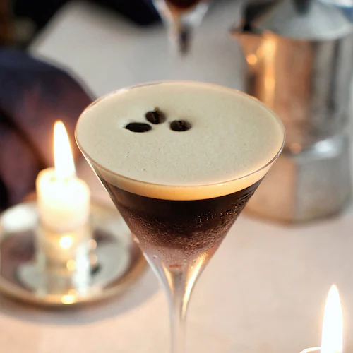

Espresso Martini

Description
The espresso martini is a cold caffeinated alcoholic drink made with espresso, coffee liqueur, and vodka. It is not a true martini as it contains neither gin nor vermouth, but is one of many drinks that incorporate the term martini into their names.
Ingredients
- Ice
- 100ml vodka
- 50ml espresso
- 50ml coffee liqueur e.g. Kahlua
- Coffee beans (optional)
Steps
- Brew 50ml of espresso-strength coffee.
- Add the ice to a cocktail shaker. Pour in the vodka, espresso, and coffee liqueur.
- Close up the cocktail shaker, and shake until it feels icy cold.
- Strain into a chilled martini glass. Garnish with three coffee beans as desired.